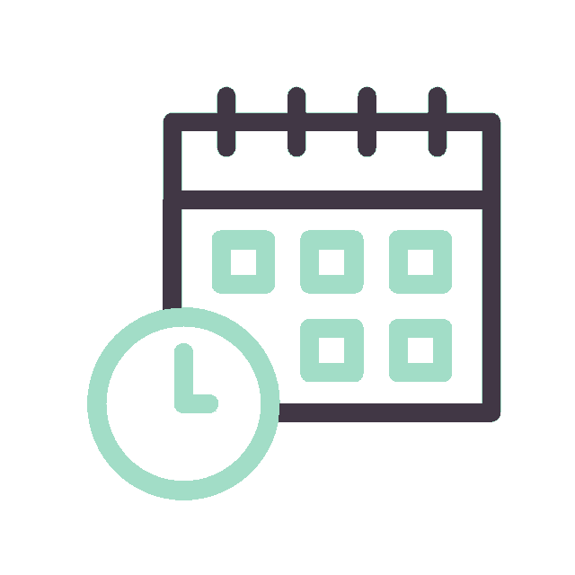

Bem-vindo(a) ao curso
Os povos ciganos fazem parte da diversidade cultural e social do Brasil, reunindo diferentes grupos, identidades, histórias e modos de vida. Apesar de sua presença no país há séculos, ainda existem muitos mitos, estereótipos e ideias do senso comum que contribuem para a construção de uma visão limitada sobre esses povos e podem reforçar situações de preconceito, estigma, discriminação e exclusão. Conhecer essa diversidade é um passo importante para reconhecer as especificidades e os direitos dos povos ciganos.
Na área da saúde, compreender essas particularidades é fundamental para fortalecer o acesso e a qualidade do cuidado. Embora o Sistema Único de Saúde (SUS) assegure o direito à saúde de todas as pessoas, aspectos socioculturais e diferentes formas de organização da vida podem influenciar a relação dos povos ciganos com os serviços de saúde. Nesse sentido, uma atenção que reconheça e respeite essas características contribui para a construção de relações mais acolhedoras e para a promoção da equidade.
Este curso convida você a conhecer melhor os povos ciganos e a refletir sobre os desafios relacionados ao acesso e ao cuidado em saúde. Ao longo da formação, serão abordados aspectos socioculturais, direitos, políticas públicas e estratégias de cuidado que contribuem para aproximar a rede de saúde dos povos ciganos, fortalecer a participação social e reduzir situações de preconceito, estigma e discriminação, promovendo uma atenção mais equitativa e inclusiva no SUS.
Assista ao vídeo de boas vindas!
[Toca música inicial]
[Sobre fundo escuro, surge a logomarca da Fiocruz em contorno luminoso, seguido do nome por extenso ao lado.]
[Mulher de cabelos grisalhos e curtos, blusa azul-marinho, sentada em ambiente doméstico com parede branca e um quadro ao fundo. Ela olha diretamente para a câmera. No canto inferior direito, uma intérprete de Libras, vestida de preto, reproduz o conteúdo em sinais.]
Em nome da equipe acadêmica, eu quero dar as boas-vindas a todos os profissionais de saúde, alunos deste curso.
Foi pensado de maneira muito cuidadosa para oferecer uma formação capaz de preparar as equipes de atenção primária à saúde para todas as fases que compõem a gestão de riscos à saúde ligada a eventos climáticos extremos.
Nós sabemos que as mudanças climáticas hoje fazem parte de uma crise mais ampla, no qual a saúde tem um papel fundamental, assim como outros setores.
Sabemos ainda quantos profissionais de saúde estão em seus territórios de atuação sofrendo os defeitos desses eventos, que têm se tornado cada vez mais frequentes e mais severos em relação aos impactos.
Nesse sentido, os serviços de saúde precisam estar muito bem preparados para exercer esse papel de enfrentamento.
Porque quando os eventos ocorrem em todas as regiões do país, eles causam muito impacto, tanto ambiental como impacto na saúde.
Portanto, procuramos abordar conteúdos que contribuem para a gestão de momentos críticos, causados, por exemplo, por chuvas intensas, mas também aqueles impactos que vão gradualmente afetando o serviço de saúde no seu cotidiano e que muitas vezes nem são perceptíveis pelos profissionais de saúde, como as secas e as estiagens.
Nós acreditamos ainda que informações como essas podem contribuir para minimizar os efeitos na saúde dos próprios profissionais de saúde, porque quando as equipes estão mais preparadas, cientes dos riscos que esses eventos podem trazer, também se sentem mais seguras para o treinamento e evitando estresse desnecessário.
Então, desejamos a todos um ótimo curso.
Seja bem-vindo e bem-vinda.
[A tela muda para uma paisagem de terra seca e rachada sob um céu carregado de nuvens escuras, com chuva ao fundo, ao longe. Em seguida, aparece uma vista aérea de uma área alagada, com árvores mortas emergindo da água marrom e um pequeno povoado nas margens.]
[Um mapa do Brasil aparece com pontos coloridos espalhados por diferentes regiões, ao lado do texto "Eventos climáticos são realidade”. Depois, cinco ícones surgem lado a lado: uma casa entre ondas (enchentes), uma encosta com pedras caindo sobre uma casa (deslizamentos), um sol sobre terra rachada (secas severas), um termômetro com sol (ondas de calor) e uma torneira gotejando (crises hídricas). À direita, imagens reais ilustram cada situação: um rio alagado com vegetação submersa e, depois, um homem com máscara de oxigênio no rosto, deitado.]
[Um desenho ilustrado mostra uma encosta desmoronando sobre uma casa, enquanto uma mulher segura a mão de uma criança e caminha com outras crianças em direção à frente, afastando-se do local.]
[Um relógio desenhado e o número "45h" aparecem à esquerda da tela. À direita, ilustrações mostram diferentes profissionais de saúde — uma agente comunitária de colete laranja, um médico de jaleco branco com estetoscópio, uma gestora com prancheta — atendendo uma família e uma idosa sentada.]
[O mesmo cenário se expande: acima dos profissionais surgem etiquetas coloridas identificando "Profissional de nível médio", "Profissional de nível superior" e "Gerente de Atenção Primária", com o contorno do mapa do Brasil ao fundo.]
[Um novo quadro se forma: o texto "Como o curso está organizado" aparece à esquerda, com um pequeno personagem segurando um tablet caminhando sobre uma trilha pontilhada que liga cinco círculos numerados de 1 a 5, cada um com um ícone (globo, onda, nuvem de chuva, termômetro).]
[Cards retangulares aparecem um a um, cada um com um ícone e o nome de um módulo: uma nuvem com exclamação ("Mudanças Climáticas e Saúde"), uma casa entre ondas ("Desastres Intensivos"), um sol sobre solo seco com uma planta ("Desastres Extensivos"), somando-se depois um quarto e um quinto card até completar a lista dos cinco módulos lado a lado.]
[O quadro muda para o texto "conclusão do curso" à esquerda, sobre fundo verde-escuro com linhas topográficas finas. À direita, o rosto de uma mulher de cabelos escuros presos, sorrindo, aparece atrás de um vidro dividido por uma faixa diagonal laranja.]
[Um ícone de certificado com um selo aparece acima do texto que vai se completando na tela. À direita, muda a imagem: agora uma profissional de saúde de camisa azul, com uma prancheta nos braços, caminha observando o entorno em uma área residencial simples, com casas de tijolo aparente.]
[A imagem à direita muda novamente para uma cena de incêndio e fumaça densa sobre uma vegetação, vista de cima.]
[A tela passa a mostrar apenas um céu com nuvens em tons de azul e laranja, com uma barra vertical branca no centro.]
[Um degrau de retângulos brancos e amarelo-claros preenche a tela em diagonal, com o texto "Obrigado. Bom curso!" surgindo à esquerda.]
[Sobre fundo roxo escuro, a logomarca das fiocruz em contorno luminoso reaparece com o nome ao lado, como no início.]
[Aparecem os logotipos institucionais lado a lado, à esquerda, e ao lado direito uma lista com os nomes e cargos das pessoas envolvidas na produção do curso, organizados por instituição.]
Estrutura do curso
Modalidade Autoinstrucional

120 horas de carga horária
4 módulos
Bom curso!